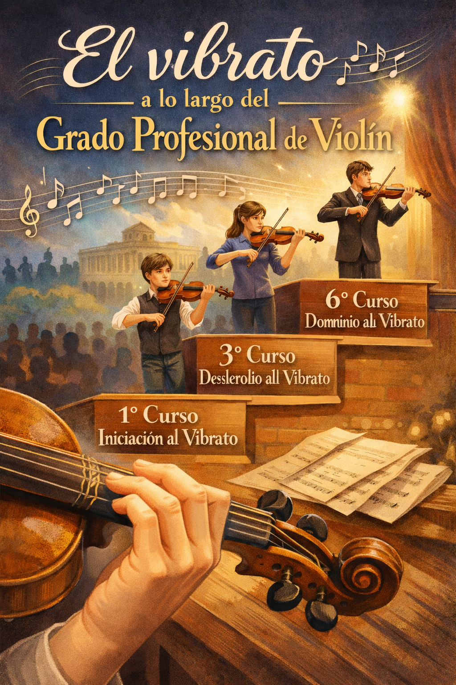

El vibrato a lo largo del grado profesional
Guía Docente de: El vibrato a lo largo del Grado Profesional de Violín
Descripción de la situación de aprendizaje
📍 Etapa educativa y nivel
Enseñanzas Profesionales de Música:
- (LOE)Ley Orgánica 2/2006 de 3 de mayo, de Educación (BOE de 4 de mayo de 2006) .
- Real Decreto 1577/2006 de 22 de diciembre, por el que se fijan los aspectos básicos del currículo de las enseñanzas profesionales de música reguladas por la Ley Orgánica 2/2006 de 3 de mayo, de Educación (BOE de 20 de enero de 2007).
- Decreto 58/2007, de 24 de mayo, por el que se establece la ordenación y el currículo de las enseñanzas profesionales de música en el Principado de Asturias.
Especialidad: Violín
Nivel: Grado Profesional (adaptable de 1º a 6º curso)
🎼 Áreas/materias implicadas
- Violín (materia principal)
- Orquesta
- Lenguaje Musical (1º y 2º)
- Música de Cámara (a partir de 3º)
- Historia de la Música (5º y 6º)
👥 Agrupamientos y organización espacial
- Clase individual (base del aprendizaje instrumental y autoevaluación)
- Pequeño grupo (observación y coevaluación)
- Gran grupo (audiciones internas, puesta en común)
📌 Espacios:
Aula de violín
Sala de Cámara
Auditorio del centro.
⏱️ Temporalización
Duración: 4–5 sesiones (adaptable)
Frecuencia: 1 sesión semanal
Integración transversal durante el trimestre
🎯 Productos finales del alumnado
🎻 Interpretación grabada en vídeo: Aplicación del vibrato en obra musical
🧠 Infografía interactiva: (herramientas: Genially / Canva)
- Tipos de vibrato
- Características técnicas
- Ejemplos musicales
🎙️ Podcast o vídeo explicativo:
- Reflexión sobre el proceso de aprendizaje
- Explicación técnica del vibrato
💻 Herramientas tecnológicas
Para el alumnado:
- Canva / Genially (infografía)
- Audacity / Anchor / móvil (podcast)
- Grabación de vídeo (móvil/tablet)
Para el docente:
- Plataforma educativa (Teams / MiConservatorio)
- YouTube (referencias interpretativas)
- Otros recursos: Grabaciones de violinistas profesionales, métodos técnicos de violín...
Obra publicada con Licencia Creative Commons Reconocimiento Compartir igual 4.0